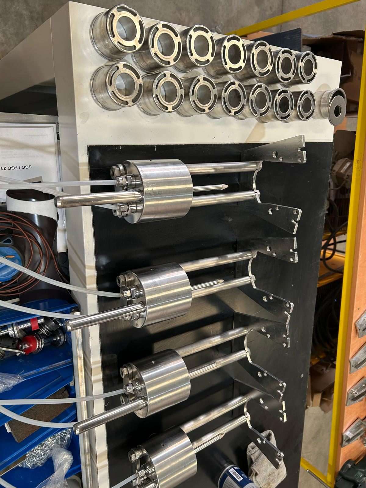
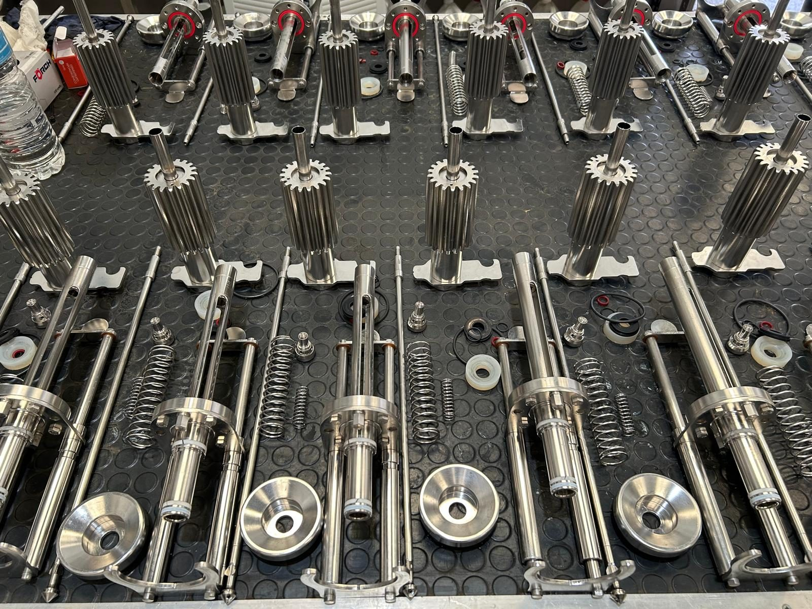
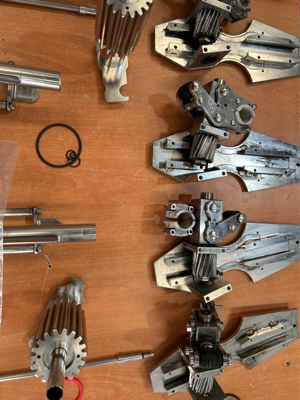

Villarrobledo · Albacete
Instalación y mantenimiento de maquinaria industrial en Villarrobledo
INMICA Villarrobledo — el servicio técnico que tu bodega necesita
Conducción de líneas de embotellado, repuestos y asistencia técnica cuando tu producción no puede esperar.
- Desde 2023
- +10 años en líneas de embotellado
- Villarrobledo (Albacete)
Sobre nosotros
Quiénes somos
En INMICA Villarrobledo somos una empresa especializada en la instalación, mantenimiento y reparación de maquinaria industrial, así como el suministro de repuestos y componentes industriales de tu bodega.
Desde nuestra fundación en 2023, trabajamos para ofrecer soluciones eficaces que ayuden a nuestros clientes a mantener sus procesos productivos en funcionamiento. Nuestro compromiso es proporcionar un servicio rápido, cercano y de confianza, adaptándonos a las necesidades de cada uno.
Contamos con un equipo técnico cualificado que ofrece asesoramiento personalizado, mantenimiento preventivo y puesta en marcha de maquinaria y localización de repuestos para una amplia variedad de fabricantes.

Por qué elegirnos
- Servicio técnico especializado en líneas de embotellado y envasado.
- Respuesta rápida para averías, mantenimiento y asistencia técnica.
- Atención personalizada, con soluciones adaptadas a las necesidades de cada cliente.
- Compromiso con la calidad, minimizando los tiempos de parada de producción.
- Amplio catálogo de repuestos industriales, con búsqueda de referencias de múltiples fabricantes.
Servicios
Qué hacemos
Ofrecemos soluciones integrales para el mantenimiento y la optimización de maquinaria industrial, adaptándonos a las necesidades de cada cliente. Nuestro objetivo es garantizar un servicio rápido, eficiente y de calidad, proporcionando tanto asistencia técnica como suministro de repuestos para mantener la producción siempre en marcha.
-
Instalación y puesta en marcha de maquinaria
Dejamos tu equipo instalado, calibrado y produciendo desde el primer día.
-
Venta de repuestos
Localizamos y suministramos componentes para múltiples fabricantes.
-
Mantenimiento preventivo
Revisiones programadas que reducen averías y alargan la vida útil del equipo.
-
Servicio de asistencia técnica
Respuesta rápida ante incidencias para minimizar los tiempos de parada.
-
Automatización y mejora de líneas de producción
Optimizamos procesos para ganar velocidad, precisión y eficiencia.
-
Asesoramiento técnico personalizado y de confianza
Te acompañamos en cada decisión técnica, con soluciones adaptadas a tu bodega.

Taller
Repuestos y reparaciones
Líneas en marcha
Ponemos en marcha tus líneas de embotellado y envasado, ajustando cada equipo para que trabaje a su rendimiento óptimo. Nuestro trabajo de automatización y mejora ayuda a ganar velocidad y precisión en cada ciclo de producción.
En el taller
En nuestro taller revisamos, reparamos y ponemos a punto piezas y conjuntos mecánicos —válvulas, cilindros, pinzas y otros componentes— antes de devolverlos a la línea. Contamos con un amplio catálogo de repuestos industriales para localizar la referencia exacta que necesita tu maquinaria.

Equipo
Quién está detrás
-
José Luis Jiménez de la Ossa Almansa
Fundador y técnico especializado
Detrás de INMICA Villarrobledo se encuentra José Luis Jiménez de la Ossa Almansa, técnico especializado en instalación, mantenimiento y reparación de maquinaria industrial. Su experiencia y compromiso permiten ofrecer un servicio cercano, rápido y personalizado, asesorando a cada cliente para encontrar la mejor solución técnica y garantizar el correcto funcionamiento de sus instalaciones.
Preguntas frecuentes
FAQ
¿En qué zona trabajáis?
Prestamos servicio en Villarrobledo y su comarca, dentro de la provincia de Albacete.
¿Qué hacéis ante una avería?
Ofrecemos una respuesta rápida ante averías, mantenimiento y asistencia técnica, para minimizar los tiempos de parada de tu línea de producción.
¿Trabajáis con repuestos de cualquier fabricante?
Contamos con un amplio catálogo de repuestos industriales y localizamos referencias de múltiples fabricantes.
¿Ofrecéis mantenimiento preventivo?
Sí, realizamos mantenimiento preventivo programado para reducir averías y alargar la vida útil de tu maquinaria.
¿Cuál es vuestro horario?
Nuestro horario de atención es de 09:00 a 14:00.
¿Cómo puedo pedir presupuesto?
Puedes escribirnos por WhatsApp al 601 990 279, llamarnos al 601 549 770 o rellenar el formulario de contacto: te responderemos a la mayor brevedad.
Contacto
Hablemos de tu bodega
El formulario de contacto se añadirá próximamente. Mientras tanto, escríbenos por WhatsApp o llama al 601 549 770.